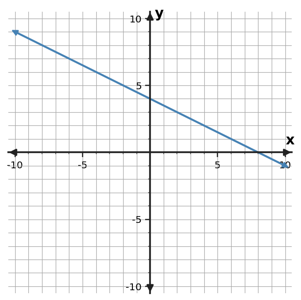

Problem 1
Partner signature:
Find the slope of the line through $(-2,6)$ and $(4,0)$.
Work alone first. Then find a partner, compare completed work, and work together on one unfinished or disagreed-on problem. Both students should understand the reasoning before signing. Find someone new and repeat.
Find the slope of the line through $(-2,6)$ and $(4,0)$.
Find the slope of the line through $(-5,4)$ and $(-1,-4)$.
Find the slope of the line through $(-3,-6)$ and $(3,6)$.
Use the table to determine the constant rate of change in $y$ per 1 unit of $x$.
| $x$ | $y$ |
|---|---|
| $0$ | $7$ |
| $2$ | $6$ |
| $4$ | $5$ |
| $6$ | $4$ |
Use the table to determine the constant rate of change in $y$ per 1 unit of $x$.
| $x$ | $y$ |
|---|---|
| $0$ | $4$ |
| $2$ | $9$ |
| $4$ | $14$ |
| $6$ | $19$ |
Use the table to determine the constant rate of change in $y$ per 1 unit of $x$.
| $x$ | $y$ |
|---|---|
| $0$ | $2$ |
| $2$ | $4$ |
| $4$ | $6$ |
| $6$ | $8$ |
Determine the slope of the line shown. Use two grid points to support your calculation.

Determine the slope of the line shown. Use two grid points to support your calculation.

Determine the slope of the line shown. Use two grid points to support your calculation.

A tank loses 24 liters in 8 minutes. What is the constant rate in liters per minute?
An account increases by 36 dollars over 4 weeks. What is the constant rate in dollars per week?
A machine produces 80 parts in 4 minutes. What is the constant rate in parts per minute?
Classify the slope of a line that rises from left to right.
Classify the slope of a line that is horizontal.
Classify the slope of the vertical line $x=-2$.
A horizontal line through $y=7$ is said to have undefined slope. Decide whether the stated slope type is correct.
A water level drops 8 cm in 4 minutes. Mia reports a slope of +2 cm/min. Correct the sign of the reported rate.
A line through $(2,3)$ and $(6,11)$ is reported to have slope $-2$. Check the calculation and correct the sign if needed.
The rule is $y=\frac{1}{2}x+4$. Complete the input-output values and name one ordered pair generated by the rule.
| Input $x$ | Output $y$ |
|---|---|
| $-1$ | $\frac{7}{2}$ |
| $0$ | $4$ |
| $2$ | $5$ |
The rule is $y=2x+3$. Complete the input-output values and name one ordered pair generated by the rule.
| Input $x$ | Output $y$ |
|---|---|
| $-1$ | $1$ |
| $0$ | $3$ |
| $2$ | $7$ |
The rule is $y=-x+5$. Complete the input-output values and name one ordered pair generated by the rule.
| Input $x$ | Output $y$ |
|---|---|
| $-1$ | $6$ |
| $0$ | $5$ |
| $2$ | $3$ |
Determine whether the table shows a constant rate of change. If it does, state the rate.
| $x$ | $y$ |
|---|---|
| $0$ | $1$ |
| $2$ | $5$ |
| $4$ | $9$ |
| $6$ | $13$ |
Determine whether the table shows a constant rate of change. If it does, state the rate.
| $x$ | $y$ |
|---|---|
| $0$ | $2$ |
| $1$ | $5$ |
| $2$ | $9$ |
| $3$ | $14$ |
Determine whether the table shows a constant rate of change. If it does, state the rate.
| $x$ | $y$ |
|---|---|
| $1$ | $10$ |
| $3$ | $6$ |
| $5$ | $2$ |
| $7$ | $-2$ |
$m=\dfrac{-6}{6}=-1$.
$m=\dfrac{-8}{4}=-2$.
$m=\dfrac{12}{6}=2$.
The rate of change is $-\frac{1}{2}$ because $y$ changes by $-1$ when $x$ changes by 2.
The rate of change is $\frac{5}{2}$ because $y$ changes by $5$ when $x$ changes by 2.
The rate of change is $1$ because $y$ changes by $2$ when $x$ changes by 2.
The slope is $-\frac{1}{2}$.
The slope is $2$.
The slope is $0$; the line is horizontal.
The constant rate is $-3$ liters per minute.
The constant rate is $9$ dollars per week.
The constant rate is $20$ parts per minute.
The slope is positive because $y$ increases as $x$ increases.
The slope is zero because there is no vertical change.
The slope is undefined because the horizontal change is 0.
No. A horizontal line has slope 0; vertical lines have undefined slope.
No. The slope is -2 cm/min because the water level is decreasing.
The slope is $\frac{11-3}{6-2}=2$, so the reported negative sign is incorrect.
Each row follows the stated rule; for example, $(0,4)$ is an ordered pair.
Each row follows the stated rule; for example, $(0,3)$ is an ordered pair.
Each row follows the stated rule; for example, $(0,5)$ is an ordered pair.
Yes. The constant rate is $2$.
No. The successive rates are not equal.
Yes. The constant rate is $-2$.